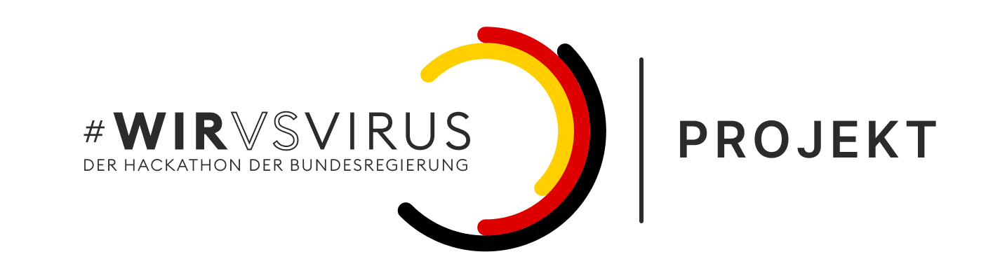

We worked on the challenge "Informationsflusses vom Test zum Testergebnis" (Information flow from test to test result) and focus on the area of identifying the Tests for the doctors, healthcars and patients.
Our concept:
URL https://docs.google.com/presentation/d/1Ym_JPo6QD9flbny4Hjn8zfvscfib0kHrbdIoIjmKzdM/edit?usp=sharing
Our Preview Prototype - for patients
Our concept sketches:
- - - -
- - - -
- - - -
- - - -